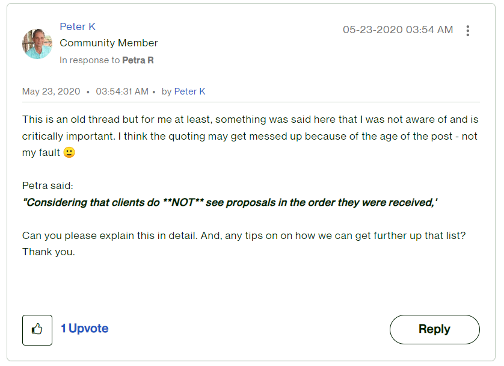
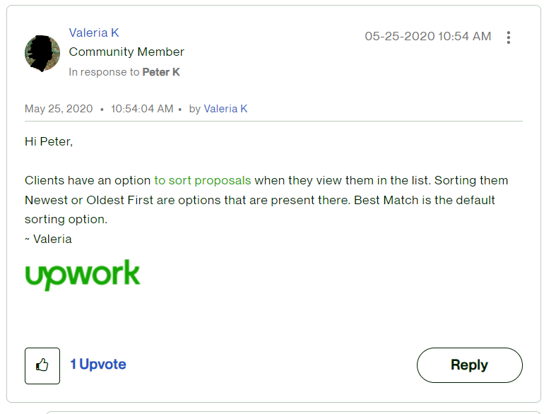

general-tips
-
your name should be unified across all platforms (upwork, paypal/payoneer and your local bank)
- you can know how many times your profile has been visited by going to find work=> my status
- when the client hires you try to be friendly, make him trus you, and offer whatever you can to improve his business even if it's not in your field of experties
- make your account focused around the client not you instead of saying I can do this and I use that try using I offer you this and that
-
according to upwork employee in this discussion proposals are sorted by best matched although there are options of "news" and "oldest" but they are not the default
 